| < | > |
| Storm brewing | [2004-10-25 00:39] |
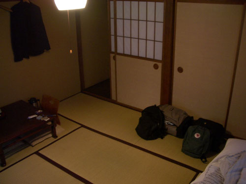 Time to leave the Marumo and its history and swish down the Kiso valley in the rain 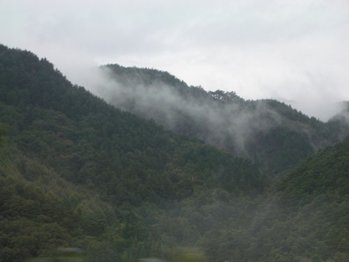 through Nagoya 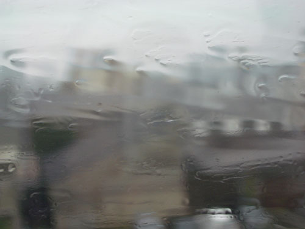 arriving via Kyoto at Nara. I'd booked by phone the day before with a ryokan that I'd fished out of the Lonely Planet guide – it was a gamble, maybe it would be ok, maybe not. The sun had come out by the time we wheeled our bags up the tacky little main street. Nara didn't seem so pretty, at least the ryokan was up at the top of the town were the park and the temples were. Maybe there it would be better. We turned off by a pond and trundled through narrow little streets trying to recognize the name of the ryokan or its telephone number. Street numbers never caught on in Japan. It started to rain again. I tried asking in a cafe and got pointed mutely in a direction. An old man at a bus stop was more detailed. It didn't seem to me we were heading in the right direction, but I had shown him the kanji in the book. He seemed quite certain. Just as I was giving up, I saw a sign that matched the kanji exactly. We wound up a gravel path to arrive here. 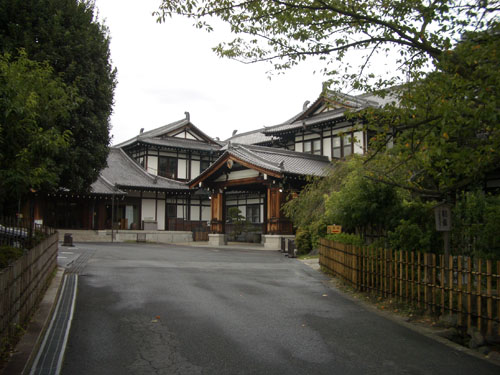 The Nara Hotel – where the Emperor stays when he's visiting. It turned out there was a typo in the guide book. Well, what else could we do but concede "defeat" – the great hand that moves Heaven was hungry for the money in my credit card. 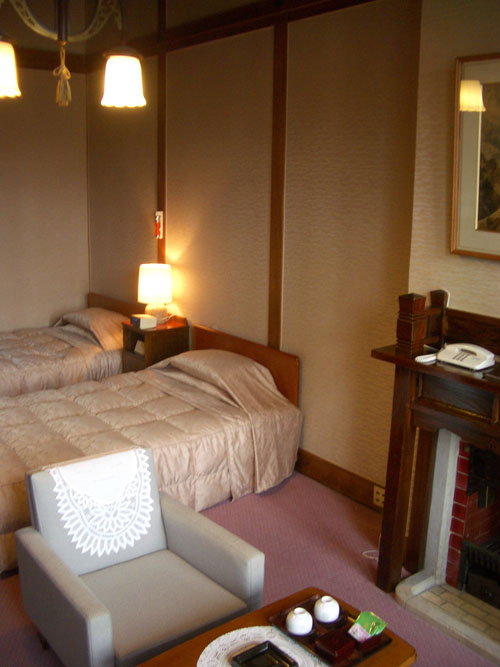 It was like Sherlock Holmes meets Virginia Woolf. A bit musty and not really our taste, but in the damp gloomy day that was developing it seemed appropriate. We dumped out things and set off to see what we could see in an afternoon. There are two kinds of herds in Nara – yellow hats and deer. 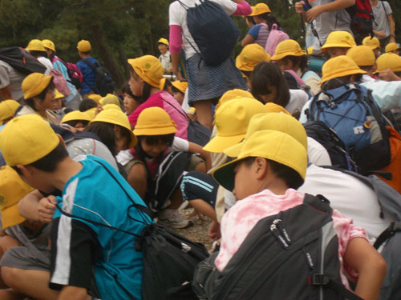 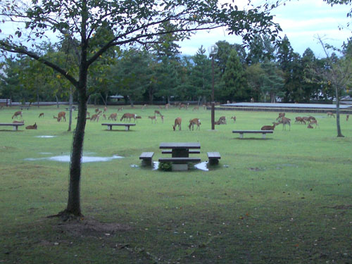 There was a long bureaucratic pantomime in the Post Office over the authenticity of our last traveler's cheques. This was followed by a closing time visit to the Buddhist sculptures in the Nara National Museum – without scholarship it looked rather dull. The weather was oppressive. We debated whether to go back to the hotel. We settled for yes, but indirectly – "let's go down that way, past that temple, and then back." As we sat on the closed temple steps it was moody and gloomy and night. 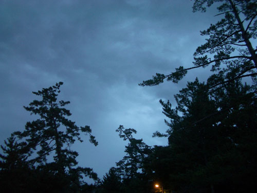 In the dark we stumbled on a huge gate manned by two old time bogymen. 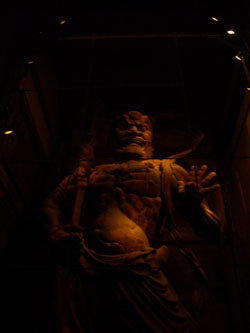 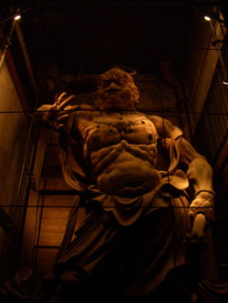 Uncertain of the way, we scuttled back down to the bright lights in search of food. The usual restaurant problem was solved eventually but neatly by a supermarket. As we ate our smuggled-in beer and sushi, the TV played images of the typhoon – the gloomy atmosphere that had dogged us all afternoon was now explained. Was Osaka airport under water? We watched as the epicenter passed over Kyoto, and then on up towards the coast. We rang Yukiko for reassurance. It was alright, it was heading out to sea. Time to photograph the furniture 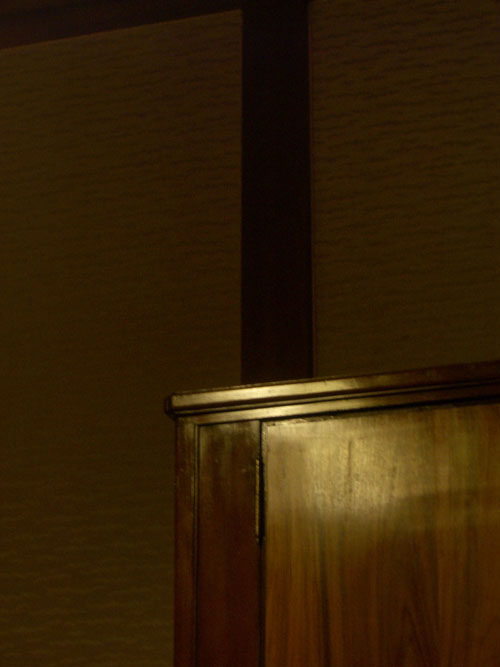 and then sleep. 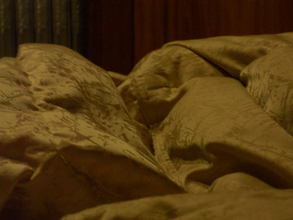 |
|
{kind=link}